9 Transitions & AnimationsWritten by Prateek Prasad¶
In the last section, you built a typographic scale and color palette that helped you decompose your design into even smaller granular layers. You ended the section by organizing these elements into your design system and wrapping up the app’s design.
While the app looks great right now, it’s far from finished. Visual appeal is only a part of a great product’s story. How it feels and how users perceive it are two other important aspects as well.
Static designs like the ones you’ve created thus far communicate how the app looks. To communicate how it feels to use the app, however, you need to make it interactive.
Interactive prototypes make your designs functional, even though there’s no business logic backing them. Prototypes play an essential role in validating functionality and gaining feedback because it lets you put a simple version of your app in real users’ hands. They’re an inexpensive way to identify friction points in an app’s flow and smooth out any rough edges before kicking off the engineering work.
Without user feedback and usability studies, it’s entirely possible that your end product won’t be usable. Changing things around after a production rollout incurs a considerable cost in both engineering time and money.
In this chapter, you’ll add interactivity and animations to the static screens you finalized in the previous chapter. While you played with Figma’s prototyping tools briefly in Chapter 1, “Book Overview & App Preview”, you’ll now explore Figma’s prototyping and animations capability at a deeper level.
Previewing the Finished Version¶
If this were the Harry Potter universe, you could see the animations on this page instead of just static images. But, sadly, it isn’t. Some creativity will help, however. Instead of using the final version of this chapter’s project as a mere reference, you’ll start by examining it. Doing so will give you a sense of what you’ll build and how it should feel in the end.
So far, everything has centered around the app’s cosmetic looks, so you could rely on the images. However, it’s impossible to convey the transitions of animations in print.
Loading the Final Project¶
From the downloaded materials, open chapter-9-final.fig in Figma. This file has a new page called Cinematic App Prototype that contains an interactive version of the app.
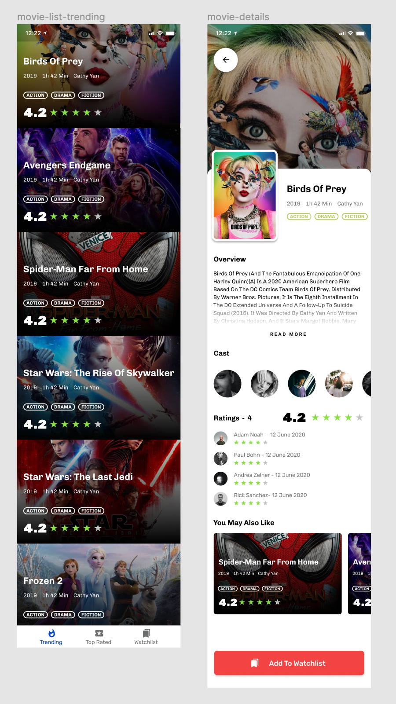
Note
Make sure you download the final project this time, rather than starting with the starter project. Throughout the chapter, you’ll update the starter to match the final version.
This is a separate page because often, while creating prototypes and interactions between different screens, you need to duplicate frames with minor differences to assist in the animation. Sometimes, you’ll need to change the contents of a frame or add elements to achieve the desired effect. Having a separate copy rather than modifying the original lets you tweak things without worrying about messing up the final version.
Another reason to keep static versions separate is that they’re used for developer handoff and exports. Keeping them free of unwanted elements makes the process less confusing.
Ready to get started? Open Cinematic App Prototype and click the Present button in the toolbar at the top.
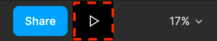
This opens a new tab with the design loaded into an iPhone 11 Pro Max frame.
Play around with the prototype. If you’re not sure which elements are interactive, click anywhere outside the device frame, and the interactive elements will blink, prompting you to click them.
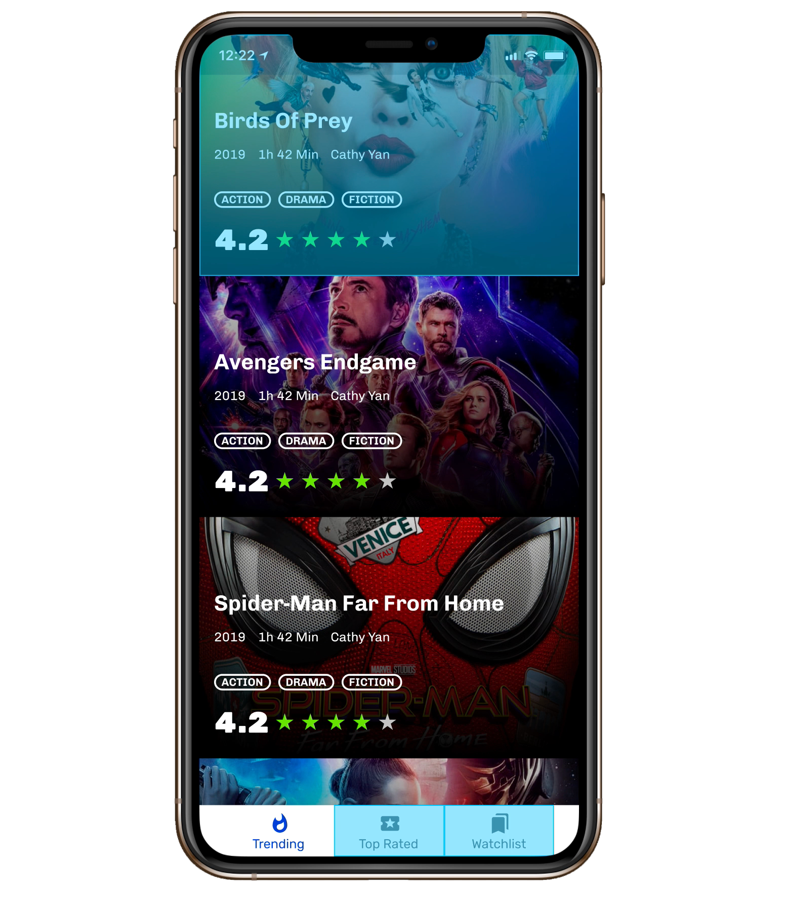
Breaking Down the Transitions¶
Now that you’ve checked out the final app, notice the following transitions in the prototype:
- The transition between the three targets in the bottom navigation.
- The transition from the movie list to the movie Details screen.
- The transition between the Add to Watchlist and Mark Watched selection state in the Details screen.
If you missed any of them, go back into the prototype and check out their flow and behavior.
First, you’ll add the navigation between these states, and then, you’ll add transitions to make them visually appealing.
Loading the Starter Project¶
From the downloaded materials, open chapter-9-starter.fig in Figma. Open the Cinematic App Prototype page. For this chapter, you’ll just work in this page.
Setting up the First Navigation¶
Notice the two frames on this page: movie-list-trending and movie-details. For your first step, you’ll work on the navigation to bring you from the movie List screen to the movie Details screen.
From the movies-list-trending frame, expand the movies Auto Layout frame and select the frame for Birds of Prey.
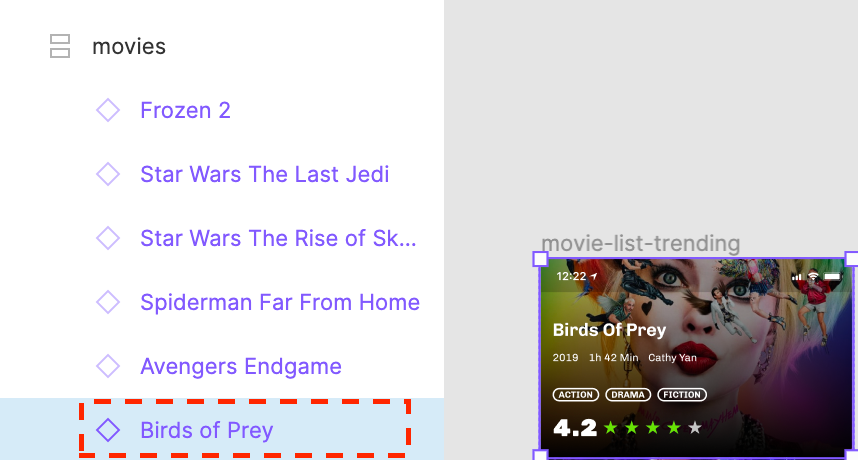
From the Properties panel on the right, click the Prototype option.
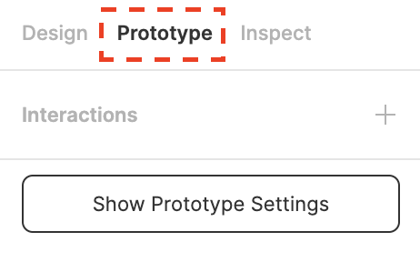
A + button will appear on the right side of the selected instance when you hover over it. Click it and drag it toward the movie-details frame to create a link.
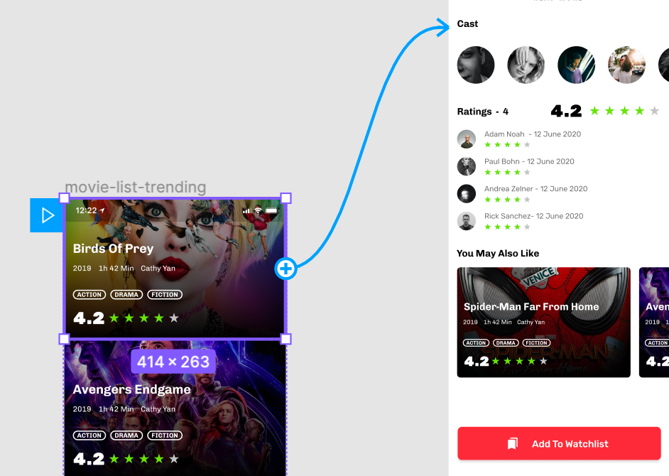
An Interaction Details pop-up will appear, telling you what will trigger the transition. Leave all the defaults in place for now, as shown below:
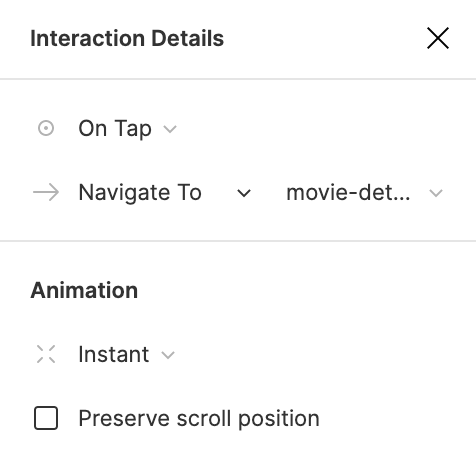
The Interaction Details’ default values define that when the user clicks the Birds of Preyinstance, the movie-details frame will load without any animations.
In the movie-details frame, select back-button and add a link back to the movie-list-trendingframe.
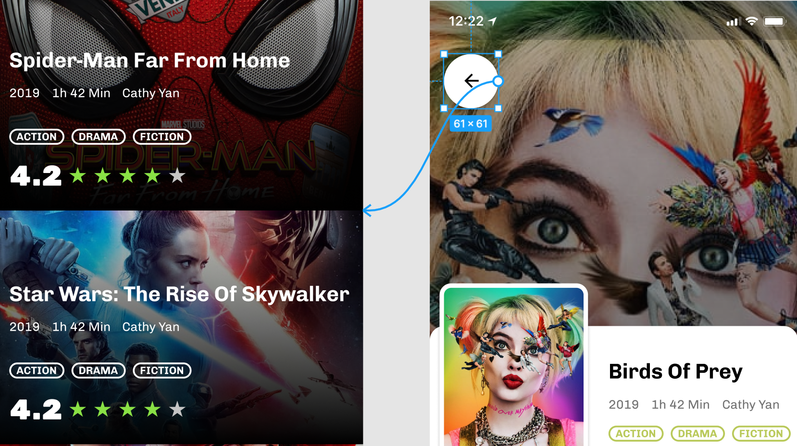
Leave the Interaction Details values at their defaults.
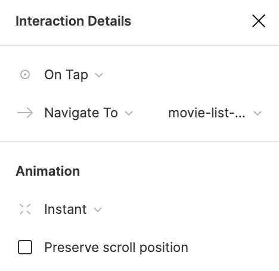
Testing Your Results¶
It’s time to check if things work as you expect. Click the Present button on the toolbar at the top of the screen. A new window will open with the screens loaded inside an iPhone 11 Pro Max device frame.
Click the Birds of Prey movie, and you’ll navigate into the Details screen. Clicking the Backbutton will bring you back to the movie list screen.
But there’s a small issue: The navigation bar scrolls along with the list instead of being anchored to the bottom of the screen.
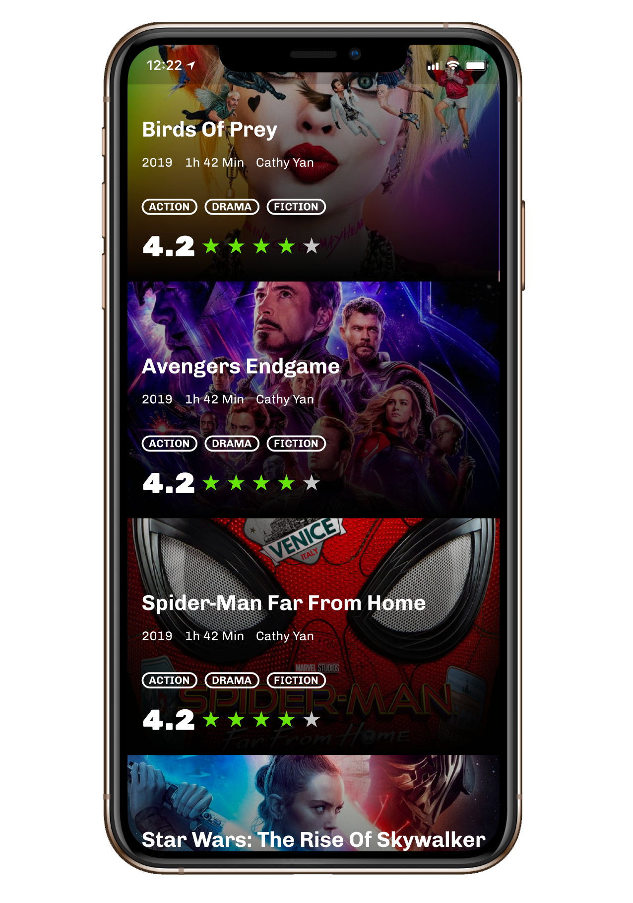
To fix this, go back to the editor and click the Design tab.
Now, select the bottom-nav instance and, under the Constraints section, check the Fix position when scrolling option.
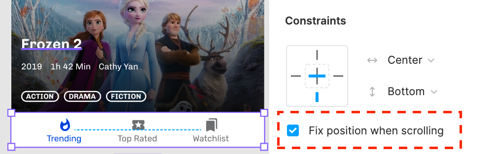
Click the Present button again. This time, the bottom navigation stays anchored to the bottom of the screen while the list is scrollable.
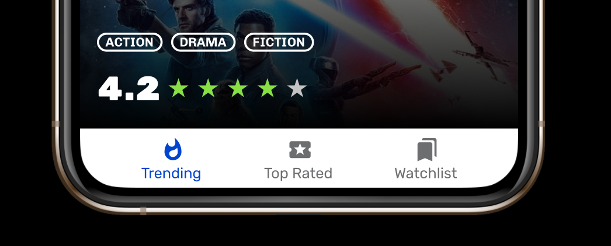
Handling the Add to Watchlist Button¶
Next, you need to handle the Add to Watchlist button state. When the user taps the button:
- The text should say Mark Watched.
- The button color should be button/secondary.
- The button’s icon should change to icon_watched.
First, duplicate the movie-details screen. Do this by either selecting the movie-details frame and pressing Command/Control+D or simply copy-pasting with Command/Control+C then Command/Control+V.
Rename the frame movie-details-mark-watched.
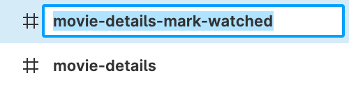
Expand the add-to-watchlist-button group and select the button-background layer.
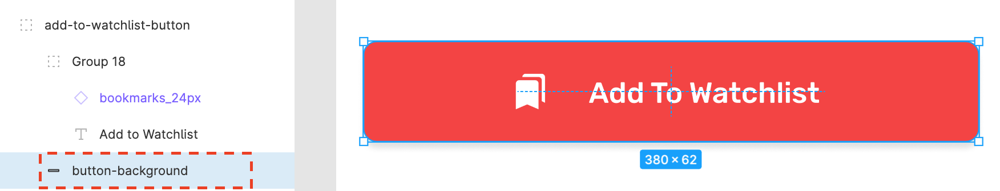
Change the button-background layer’s fill style to button/secondary.
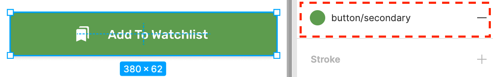
Change the button’s text to Mark Watched.
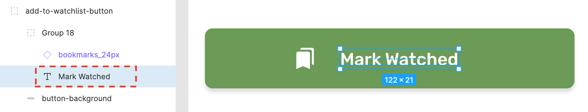
Finally, to change the button’s icon, select the icon instance from the Layers panel. Use the icon_watched icon.
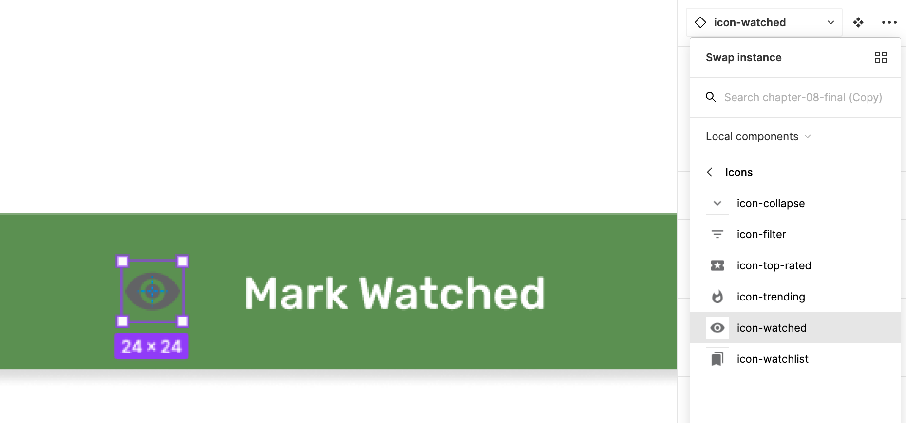
You also need to change the icon color to text/secondary.

Finally, rename the group from add-to-watchlist button to mark-watched-button.
Great job! Now, it’s time to wire up the navigation to this screen.
Wiring up the Navigation¶
For your first step, select the add-to-watchlist-button in the movie-details frame and create a link to the movie-details-mark-watched frame. Check the Preserve scroll position option — it ensures that when you transition to the next screen, your screen’s scroll position stays the same. If the option is unchecked, the next screen will jump back to the top when you click the button.
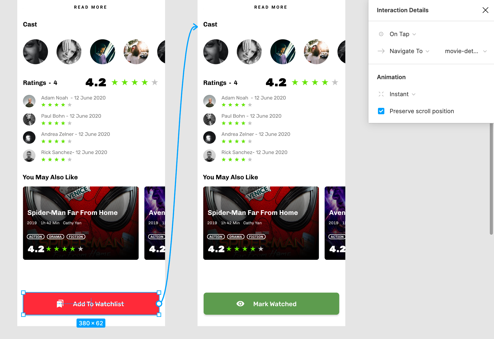
Next, select the mark-watched-button and create a link back to the movie-details frame. As before, check the Preserve scroll position option.
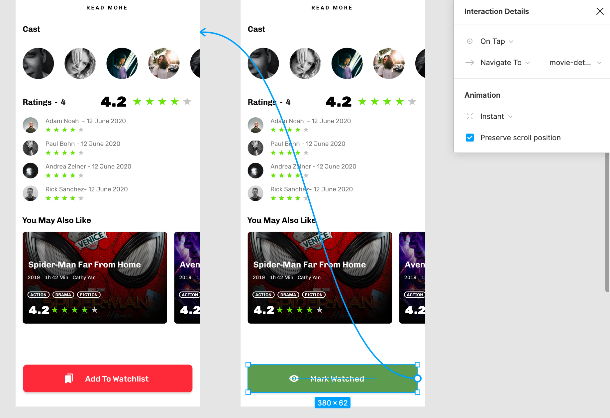
If you head back into the interactive prototype tab and press the button, it will now change states.
Great stuff! Now that you have a basic navigational flow from the List screen to the Details screen, it’s time to start working on the bottom navigation.
Making the Bottom Navigation Interactive¶
Since there are three tabs, you’ll need three navigational destinations. The trending tab already exists, but you need to add the top-rated and watchlist tabs.
Duplicate movie-list-trending twice and rename the new instances movie-list-top-rated and movie-list-watchlist.
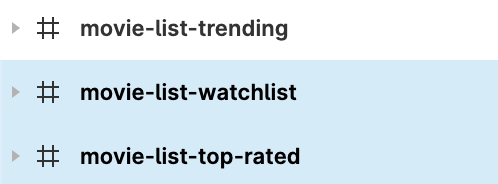
Instead of adding a new set of movies, all you need to do is shuffle the movies list.
To shuffle the list items, select a list item and drag it up or down to change its position. For reference, here’s the list order the final project uses:
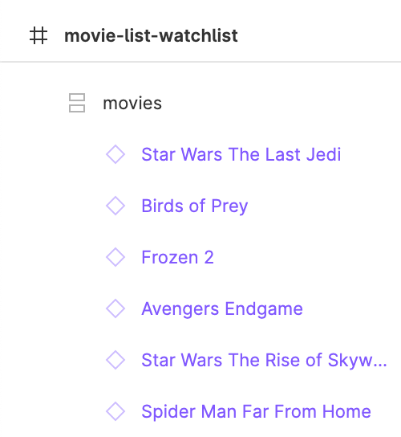
Next, you need to change the active tab on each frame. First, in the movie-list-top-ratedframe, expand the bottom-nav component and select the trending item.
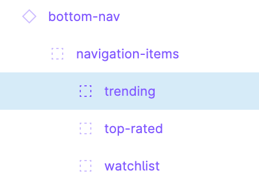
Change its fill style to navigation/inactive.
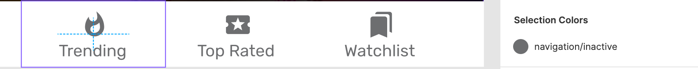
Now, select the top-rated item and change its fill style to navigation/active.
Great job! Now, repeat this process in the movie-list-watchlist frame. Change the trendingitem’s fill style to navigation/inactive and make the watchlist item’s fill style navigation/active.
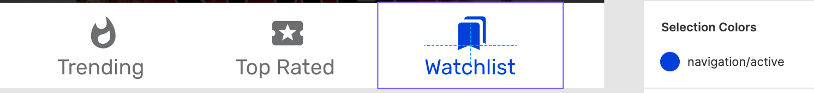
Now, you need to wire the navigation items together.
Wiring up the Navigation Elements¶
Start with the movie-details-trending frame. Select the top-rated item in the bottom-navcomponent and create a link to the movie-list-top-rated frame.
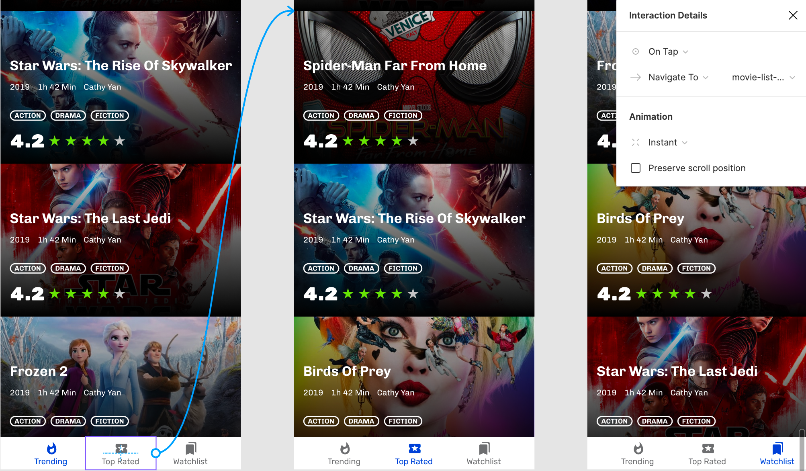
Then, select the watchlist item and create a link to the movie-list-watchlist frame.
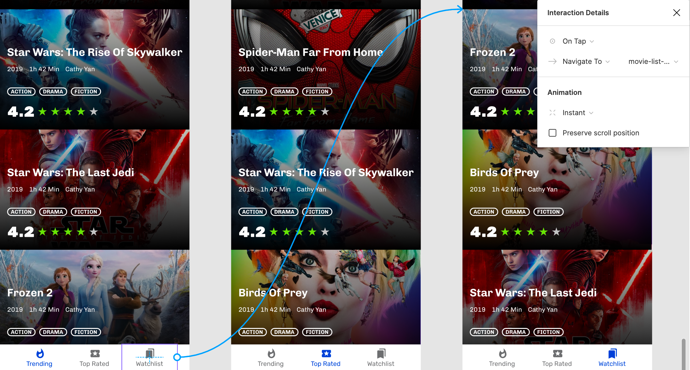
Next, in the movie-list-top-rated frame:
- Select the trending item in the bottom-nav component and create a link to the movie-list-trending frame.
- Select the watchlist item and create a link to the movie-list-watchlist frame.
Finally, in the movie-list-watchlist frame:
- Select the trending item in the bottom-nav component and create a link to the movie-list-trending frame.
- Select the top-rated item and create a link to the movie-list-top-rated frame.
Now, click Present and interact with the prototype. You’ll be able to click the navigation targets and switch between the different screens.
Awesome job! You now have a basic prototype that you can use to navigate the different screens in the app and visualize the different selection states of the buttons in the details UI.
Functionally, the prototype is ready, but it lacks visual appeal; the transitions feel bland. In the next section, you’ll fix that by adding animations to make the app extra awesome.
Animations & Animation Interpolators¶
Before you move on to adding animations to the prototype, take a moment to understand what animations are and which interpolation options Figma provides.
It’s easy to confuse the terms transitions and animations. Transitions work on a scene or state level and influence larger changes like moving from one screen to another, whereas animations work on an individual element level.
Animations — and motion, in general — have a huge influence on how users perceive an app. Besides adding aesthetic flair, animations have other implications, like adding context to what’s happening in the app. They help users navigate the app more effortlessly.
Good animations and thoughtfully choreographed motion also help establish visual hierarchy and convey the relationship between different screens to the users. In this app’s case, the List screen is the parent, while the Details screen is the child, conveying more detail about a selected movie.
When done right, motion can be a useful tool in user education, subtly conveying critical information or feedback on specific actions. A great example of this is the iOS lock screen. When you enter an incorrect passcode, the passcode field wiggles to let you know.
At their essence, animations are just mathematical equations that influence a value — like position, rotation, scale, etc. — over time. These equations, also known as interpolators, determine how the animation looks.
Understanding interpolators is key to deciding which animation works best for your specific needs. There’s no defined set of rules one can follow to add animations. It boils down to trying and seeing what works best — and, most importantly, what feels right.
Since this is a book where images can’t physically move, you’ll rely on math and a basic understanding of graphs to understand these concepts. The graphs explaining interpolators have time on the x-axis, which increases from left to right, and the position value on the y-axis, which increases from the bottom upward.
Note
Interpolators aren’t limited to modifying position values — you can also use them to modify the rotation scale and other attributes. This chapter focuses on position values because they’re easier to imagine.
Types of Interpolators¶
Before you start adding animations to the Cinematic app, take a moment to learn about the different types of interpolators Figma offers.
Linear Interpolator¶
The first interpolator you’ll look at is linear. Linear interpolation is represented as a straight line, meaning the change in position is linearly related to the change in time:
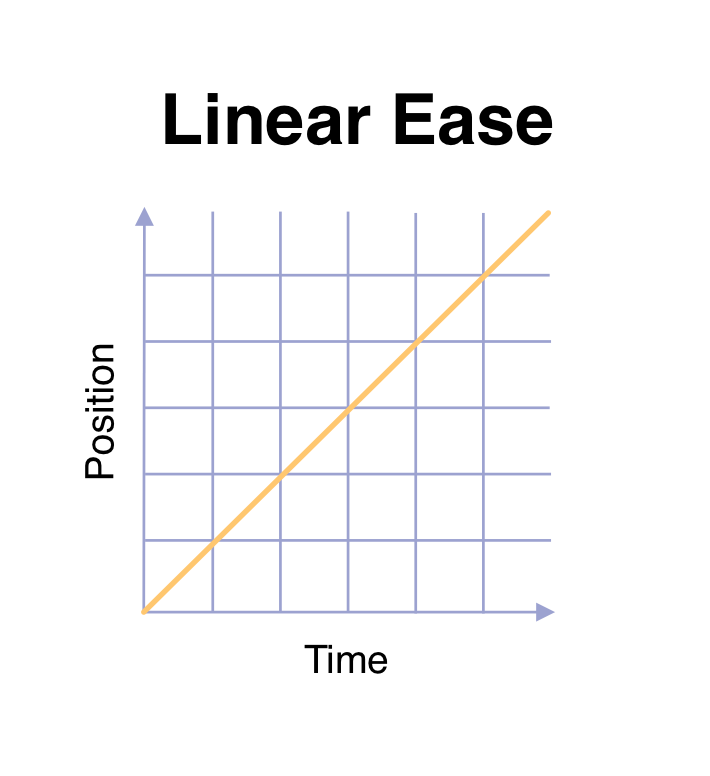
Linear movements often feel robotic and unnatural. That’s because, in the real world, inertia influences all movement. Objects don’t suddenly start and stop. They start slowly and accelerate or decelerate until they stop.
Ease-In Interpolator¶
In an ease-in curve, as shown in the graph, changes in an object’s position start slowly and accelerate as time passes. Their quickest rate of motion is at the end of the animation.
Imagine, for example, a car stopped at a traffic light. When the light turns green, the car accelerates away.
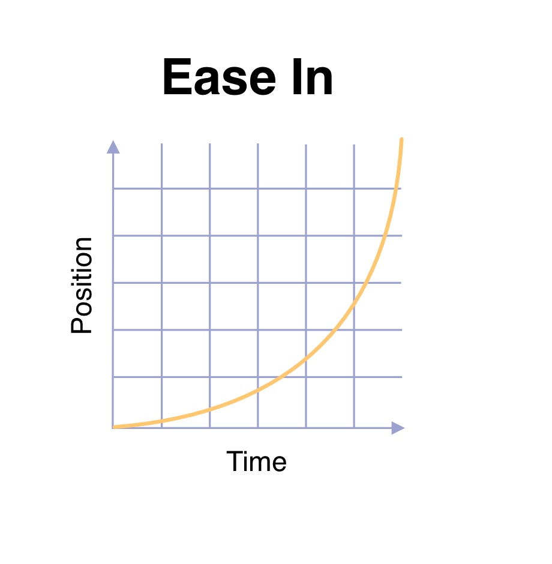
Ease-in interpolation is an excellent choice for moving elements off the screen.
Ease-Out Interpolator¶
An ease-out curve is the opposite of an ease-in curve, as shown in the graph below. Changes in the object’s position start fast and slow down toward the end of the animation. For example, imagine a cartoon character running in and skidding to a stop.
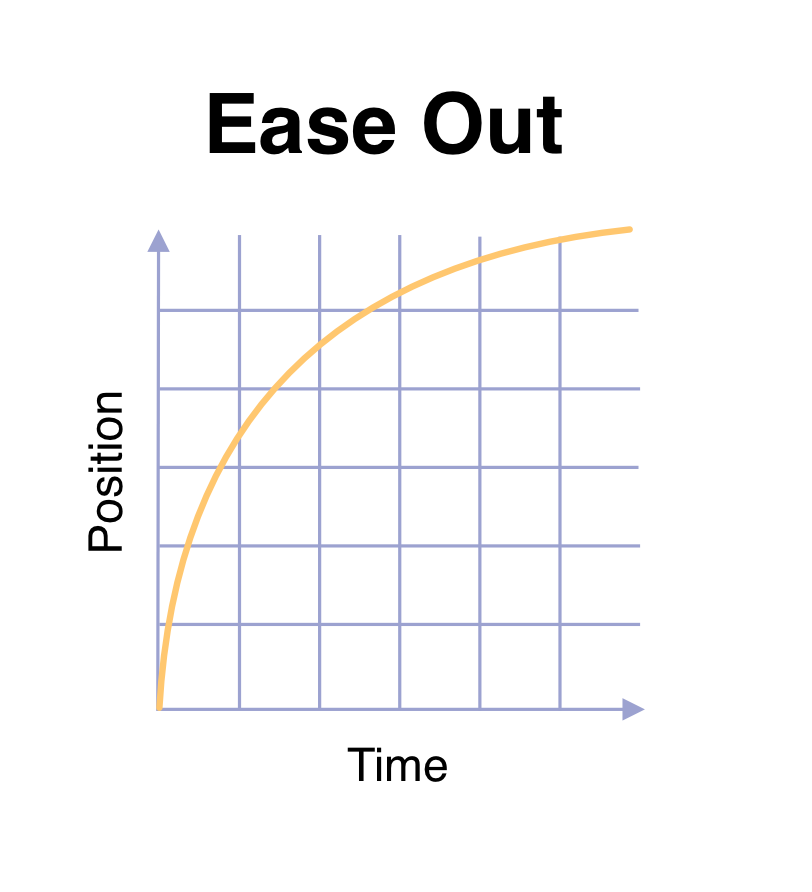
Ease-out interpolation works well for moving elements into the screen.
Ease-In-And-Out Interpolator¶
An ease-in-and-out interpolator starts the interpolation slowly, accelerating in the middle and slowing down toward the end. A good example is a sprinter who starts from a fixed position, runs the race, and then slows to a stop after the finish line.
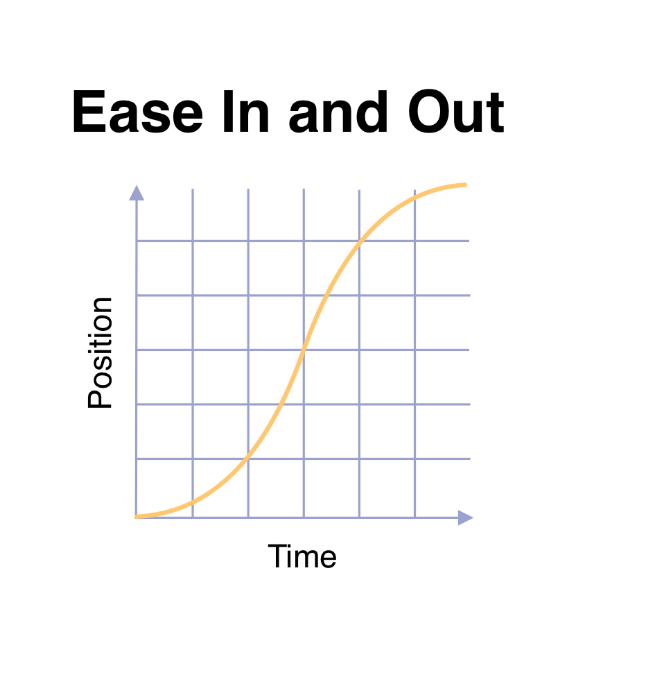
This interpolation makes interactions feel friendly and perfect — but overusing it can lead to transitions feeling oddly unnatural.
Ease-In-Back Interpolator¶
The ease-in-back interpolator starts by moving the object back a few positions, then releasing it to accelerate toward the end, like when you pull a pinball plunger back before releasing the ball. This is useful when you need anticipation in your animations or want to create bouncy — or springy — feeling animations.
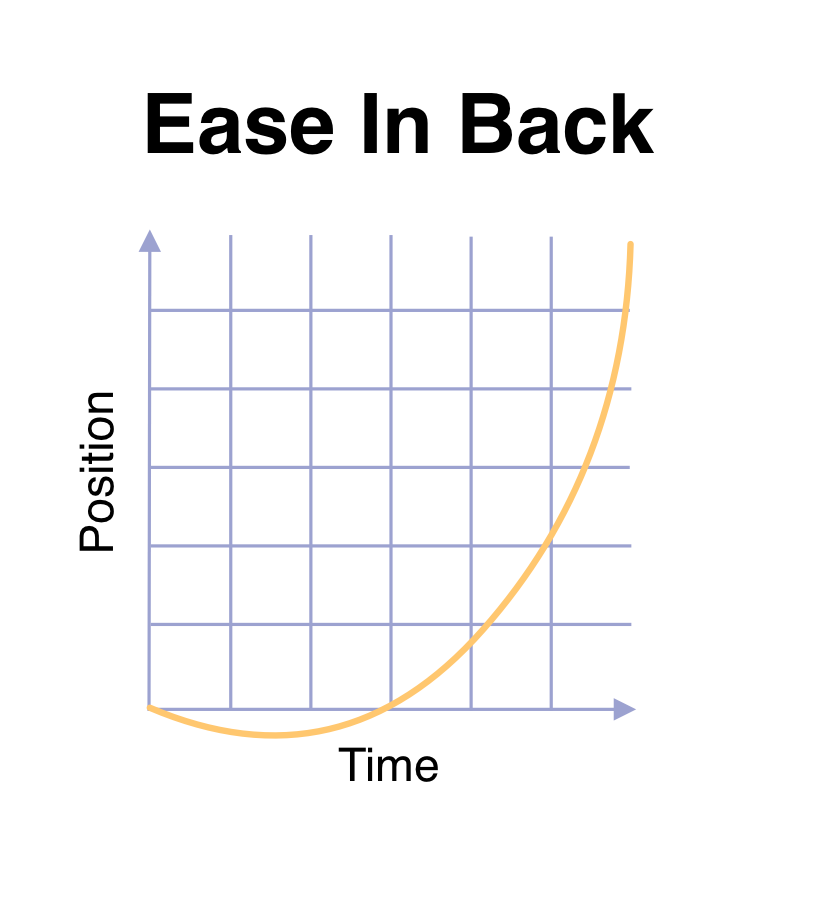
When used tastefully, it adds a flair of fun to the animations.
Ease-Out-Back Interpolator¶
The ease-out-back interpolator is the opposite of the ease-in-back interpolator. It starts by accelerating the object, then moves the object past the final position before arriving at the final position. Imagine dropping a heavy ball onto a stretchy surface, where it drops below the surface then springs back to rest upon it.
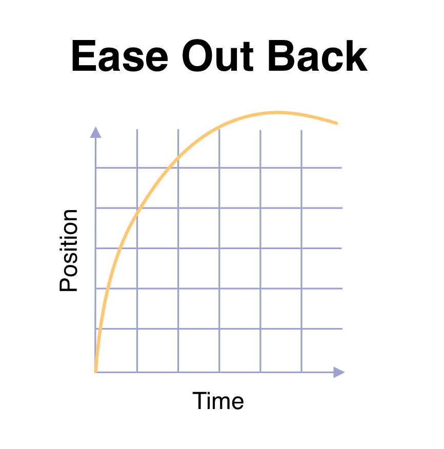
The ease-out-back interpolator gives the animations a bounce or a reactionary motion. You can use this as a subtle ending to an animation.
Ease-In-And-Out-Back Interpolator¶
The ease-in-and-out-back interpolator combines the ease-in-back interpolator and the ease-out-back interpolator. It creates an anticipatory backward-bounce motion at the beginning, an acceleration in the middle, and then a bounce toward the end.
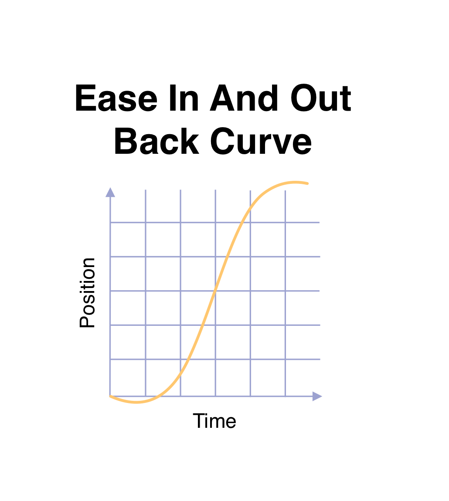
Now that you’ve covered what interpolators are and how they influence values, it’s time to get started with the animation for navigating between the List screen and the Details screen.
Implementing the Navigation Animations¶
The animations in the final project have four key aspects:
- The backdrop grows and increases in opacity from the middle of the screen.
- The Details screen image grows and moves up to its final position.
- The title, movie info, genres, overview and background cards move up to their final positions from the bottom of the screen.
- The Back button grows to its final size in its final position.
To see this in action, open the final project’s interactive prototype and test it out.
To achieve the final effect, you’ll use a clever feature in Figma called Smart Animate.
Using Smart Animate¶
Smart Animate takes a starting state and a final state for an element and animates the element’s properties between those two states. If you’ve used Keynote’s Magic Move feature, Smart Animate works the same way, just for your Figma designs.
There are two requirements for Smart Animate to work properly:
- The element that you need to animate must exist on both the starting screen and the final screen.
- The element must have the same name on both the starting screen and the final screen.
These requirements are very important to keep in mind. If even one of these is violated, you’ll end up with a weird or broken animation.
Note
Smart Animate is very similar to using Shared Element Transitions on Android. The underlying mechanics are also very similar. The shared element transition animates a view between its starting and final state, provided the view is present on both screens and has the same tag in both layout XML files.
Start with a simple example to get the hang of Smart Animate.
Animating the Back Button¶
When you enter the Details screen, the Back button should grow from a point size to its final form.
To make this happen, copy the back-button in the movie-details frame and paste it into the movie-list-trending frame.
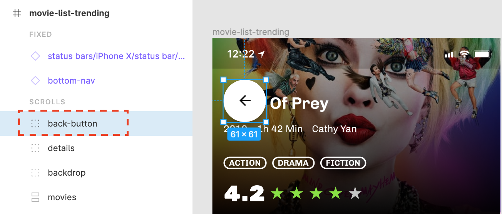
This copies the button in the same position as in the Details screen.
Select the back-button you just copied and:
- Change the width and height to 1.
- Change the X value to 36 and the Y value to 70.
- Change the opacity to 0%.
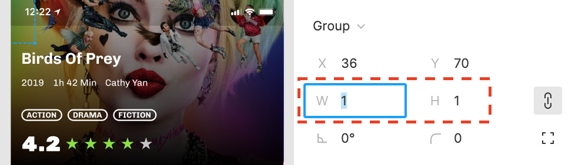
Note
If you lose the selection because the button is too small to manipulate directly with your mouse, just select back-button from the Layers panel and modify its properties.
All right, now you need to make one final change so you can preview this animation.
Go into the Prototype section and select the link you added from the Birds of Prey movie to the Details screen. Under the Animation section, select Smart Animate from the drop-down. Use Ease In And Out as the interpolator and specify a duration of 600ms.
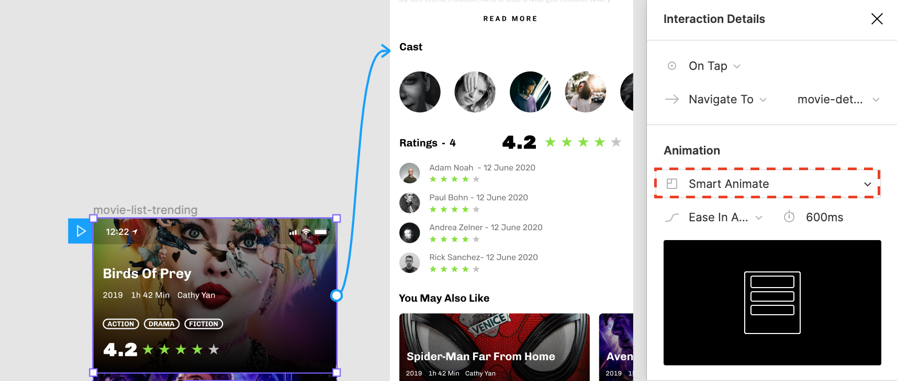
Time for some fun! Click the Present button and click the Birds of Prey movie card. You’ll see the Back button grow from a small point into its full size.
For a little test, rename the back-button on the movie-list-trending frame to back-button-2and try interacting with the prototype. You’ll see it no longer works. Be sure to change the name back before proceeding.
To stress this point again, ensure the elements you’re trying to animate:
- Exist on both frames.
- Have the same names on both frames.
Animating the Details Card¶
Next, you need the details card to slide up into place when the user enters the Details screen.
To do so, first, copy the details group from the movie-details frame to the movie-list-trendingframe.
As you saw earlier, the copied group will maintain its position.
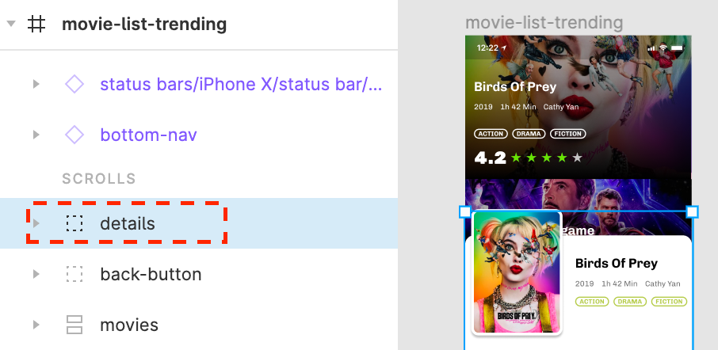
Select the details group you copied and change the Y value to 923.
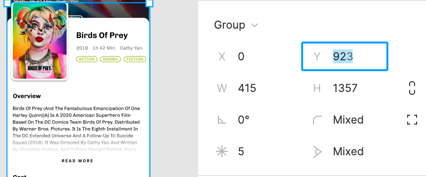
Next, expand the details group and select the title, info, genre, overview-header and the overview-text layers and group them by pressing G.
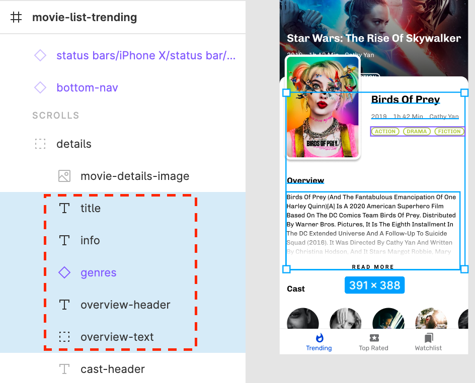
Name the group details-animated-content.
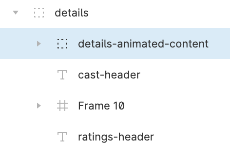
Select the details-animated-content group and change the X value to 16 and the Y value to 1091.
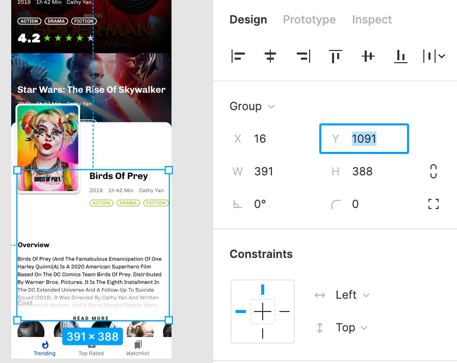
Reduce its opacity to 50% by setting the Layer Pass Through to 50%.
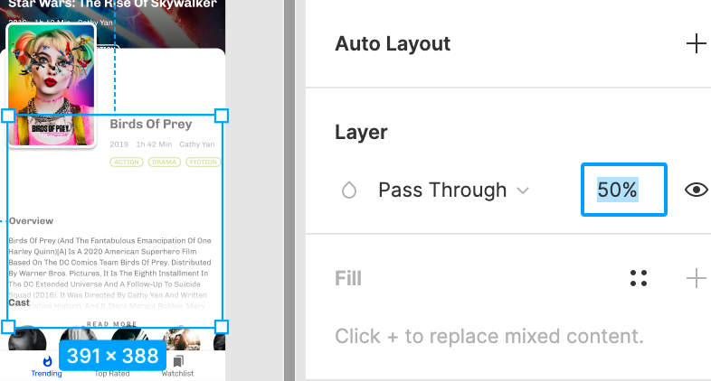
Next, you’ll deal with the image. Select the movie-details-image in movie-list-trending screen and:
- Change X to 73 and Y to 1031.
- Change the width and height to 10.
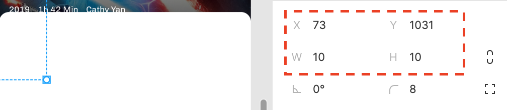
Finally, change the Fill opacity and the Stroke opacity to 0%.
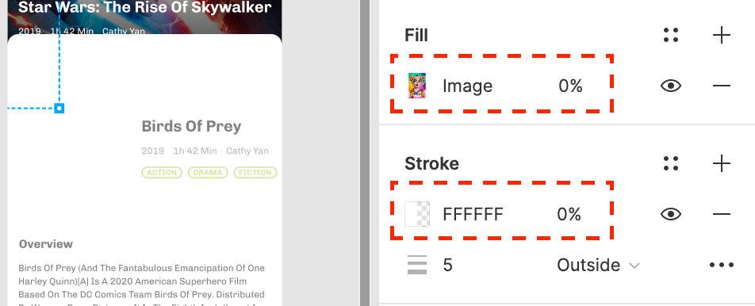
For your last step, select the details group in the movie-list-trending frame and change the opacity to 0%.
Click the Present button and view the prototype. You’ll notice the details section and the Back button animate into their final positions when you click the Birds of Prey movie card.
You can see that a lot of what you did to achieve this effect was smoke and mirrors. Smart Animate works on a simple premise of interpolating values between the initial and final state. Everything you make the tool do in between is trickery — and magic, in a way.
Animating the Backdrop¶
You’re almost there with the effect. You just need to add one last bit to wrap it up: animating the backdrop. In the final project, the backdrop image grows to its final size from the screen’s center. You’ll add that animation now.
First, copy the backdrop group from the movie-details screen and paste it into the movie-list-trending frame.
Select the backdrop layer you copied and change the width to 399 and the height to 991.

Next, align the backdrop layer horizontally and vertically in the frame. You can use the alignment options from the Design section.
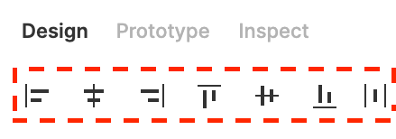
Now, select the backdrop layer and, from the Effects section, give it a Layer Blur with a value of 90.
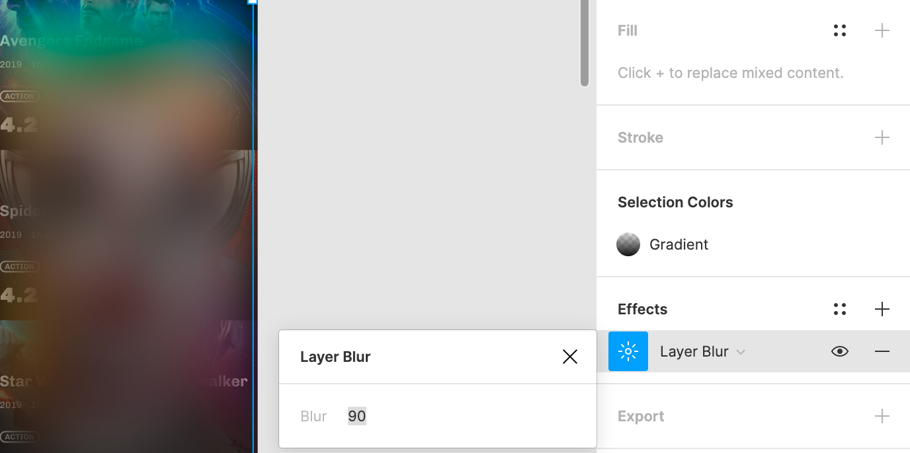
Finally, change the layer’s opacity to 0%.
Click the Present button now and interact with the prototype. The Details screen animates into the screen beautifully. The button grows in place, and the backdrop and details group expand from the bottom of the screen.
Animating the Transition to the List Screen¶
You need to tweak one final thing to complete the animation: When you click the Back button on the Details screen, there’s no transition when you return to the List screen.
Ideally, the animations should play in reverse when you click the Back button and exit the Details screen. With Smart Animate, this is relatively straightforward to do.
Return to the editor and click the Prototype option. Now, select the link from the Back button on the movie-details frame to the movie-list-trending frame.
Change the animation to Smart Animate, and use the Ease Out interpolator. Give it a duration of 400ms.
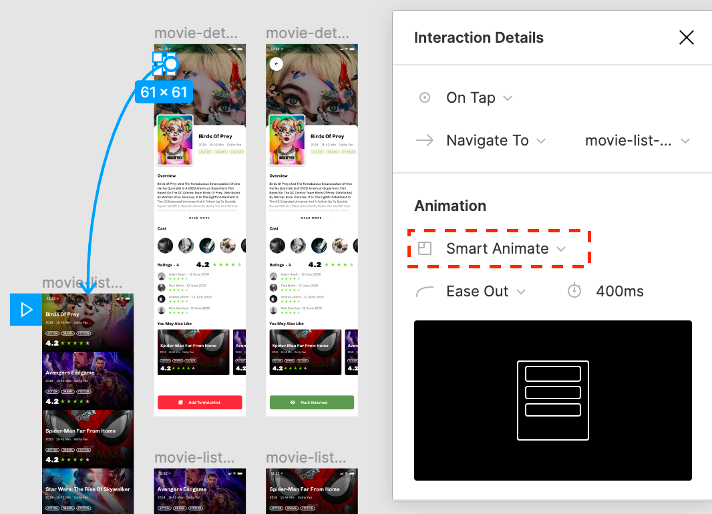
Now, when you interact with the prototype, the animation reverses when you exit the Details screen.
Using Animations Thoughtfully¶
Great job building a fully interactive prototype! Even with the minimal set of prototyping options available in Figma, you can create sophisticated and slick-looking animations and transitions.
Now is a great time to quote Uncle Ben: “With great power comes great responsibility.”
Since Figma abstracts away a lot of the underlying grunt work to make your animations work, its simplified toolset can create some really complex-looking custom animations. But you don’t necessarily have to create those complex animations just because they look cool.
Often, when building such transitions, you need to be mindful of the engineering effort it involves to bring them to life. You also need to ask yourself if these transitions help the user in any way or if they’re just adding unnecessary friction.
This finesse will come naturally with time as you create more designs, do user testing and gather feedback. For now, the prototypes you just created strike the right balance between being visually pleasing and being straightforward enough to replicate in code.
In the next chapter, you’ll learn how to share your designs with your team, gather feedback and add some final polish.
Key Points¶
- Transitions and animations can be valuable tools in helping the user navigate your app — in addition to giving it some extra flair.
- Figma offers several different animation interpolators, allowing you to choose the animation type that best suits your app.
- You created links between the different screens and the bottom navigation targets.
- Figma’s Smart Animate feature allows you to animate elements easily. However, the elements must appear on the beginning and final screens and have the same name on both.
- To give your app a more natural feel, when a user backs out of a screen, use the animation opposite of the one used to enter the screen.